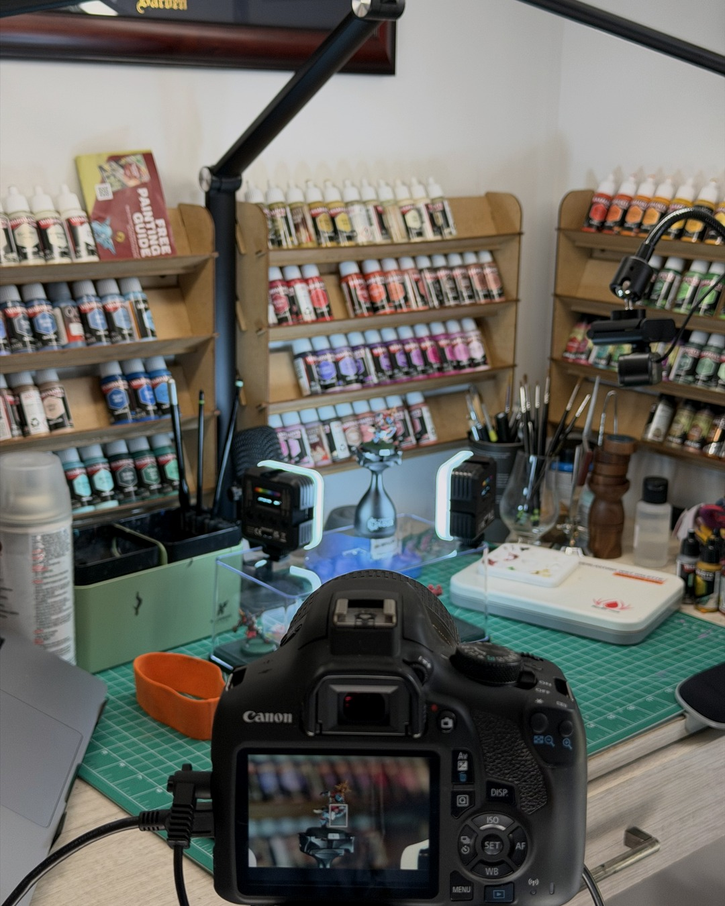

My mini photo setup (a whole second hobby)
Posting your minis is basically a whole second hobby. 📸
A friend asked what my photo setup looks like, so here it is in all its glory: a small lightbox, a black velvet backdrop, and a Canon Rebel T6 with a 100mm macro lens on a tripod. I shoot RAW, tethered, and do all the editing in darktable.
That screen says f/32 at 0.3 seconds. Tiny aperture for depth of field, slow shutter to make up for it, which is why the tripod and the tether earn their spot.
Is it way overkill for one little Bretonnian knight? Absolutely. Is it also lots of fun? Also absolutely.
You don't need any of it to get good photos, though. A phone, a window and a mug to prop it on get you most of the way there, and that budget setup is on my site (link in bio). This is just where the rabbit hole goes. (darktable is free, so at least one thing in here is budget-friendly.)
The lightbox and velvet are linked in my bio too, and they're affiliate links, so using them helps fund the rabbit hole 🙌
@warhammerofficial
#miniaturepainting #miniaturephotography #macrophotography #bloodbowl #warhammercommunity
The full guide
- Budget mini photography: make the paint job look like it does in person →Your minis don't suck, your lighting does. Construction paper, a daylight bulb, a mug and a timer fix most of it.
- Shooting minis on an old DSLR (and when better gear actually helps) →My first DSLR was a 2013 Rebel on the kit lens. Now it's a renewed Rebel T6 with a 100mm macro, shot RAW and tethered. Settings, what I'd change, and when better gear actually helps.
Gear in this post
- Glendan 10" photo light boxEven light for mini photos
- Black velvet photo backdropLight-absorbing, non-reflective black for dark backgrounds
- Canon EOS Rebel T7 bundleClosest current model to the Rebel T6 I shoot on (kit lens, card and bag included)
- Canon EF 100mm f/2.8 Macro USM (Renewed)My macro lens (I bought it renewed; get renewed from a seller with an inspection and a guarantee)
Affiliate links. All gear